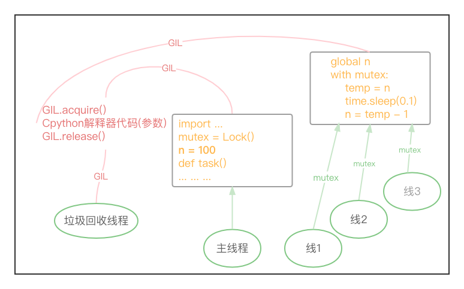
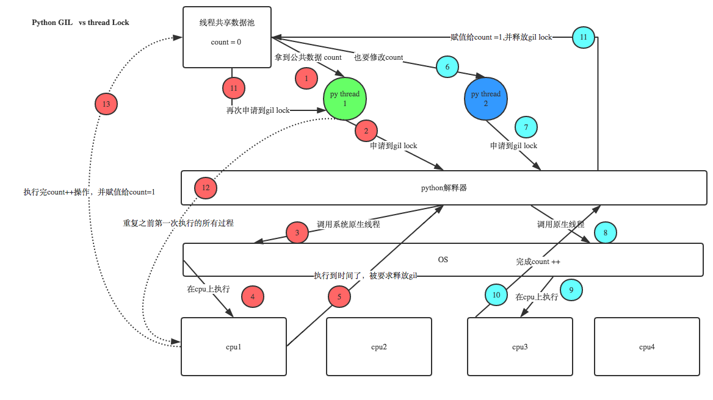

GIL详解
参考链接: 越往细处想,越觉得自己是个菜鸡 (つД`)ノ
https://www.cnblogs.com/linhaifeng/articles/7449853.html
https://zhuanlan.zhihu.com/p/75780308
https://blog.csdn.net/weixin_41594007/article/details/79485847
GIL新解:
https://zhuanlan.zhihu.com/p/401127743
http://www.dabeaz.com/python/UnderstandingGIL.pdf
引入¶
官方解释¶
In CPython, the global interpreter lock, or GIL, is a mutex
that prevents multiple native threads from executing Python bytecodes at once.
This lock is necessary mainly because CPython’s memory management is not thread-safe.
(However, since the GIL exists, other features have grown to depend on the guarantees that it enforces.)
1> 在Cpython中,全局解释器级别的锁,或者简称GIL,是一个互斥锁.
2> 它可防止多个本机线程同时执行Python字节码.
多个线程即多个任务,注意是同一进程下的多个线程;运行的py程序都会转换成py的字节码运行
3> 这把锁是非常重要的,因为Cpython解释器的内存管理不是线程安全的.
线程是否安全需要看多个线程修改" py解释器级别 的共享数据"到底会不会改乱,若会改乱,将加互斥锁
那py解释器级别、py程序级别的共享数据是什么？-- 前者垃圾回收的数据,后者线程执行的任务数据..
4> 无论如何,由于GIL的存在,Cpyhton解释器衍生出来的功能都将依赖于这把锁.
GIL介绍¶
首先明确一点! GIL不是python的特性, 它是在实现CPython解析器时所引入的一个概念!
虽然CPython是大部分环境下默认的Python执行环境.
但Python完全可以不依赖于GIL, 像其中的JPython就没有GIL...
GIL本质就是一把互斥锁, 既然是互斥锁, 所有互斥锁的本质都一样, 都是将并发运行变成"串行".
以此来控制同一时间内共享数据只能被一个任务所修改, 进而保证数据安全.
GIL这个互斥锁让同一进程内并发的多个线程同一时间只能有一个执行.
意味着在Cpython解释器中: 一个进程下的多个线程无法实现并行 -- 即无法利用多核优势
大白话: 多线程面对四核的cpu,四个核都用得上,但同一时间只会用其中一个.
不同进程内的两个线程是能并行的哦!实则指的就是多进程.
但GIL不影响多线程并发的实现哦!!
(多核cpu来回运行多个线程,在这过程中, 每时每刻只有4个核中的1个核在运作,但不一定是同一个核)
Q: 为什么要用GIL？
A: 因为Cpython解释器自带的垃圾回收机制不是线程安全的!
提前说一嘴: 保护不同数据 (解释器级别--GIL、程序级别--自定义互斥锁) 的安全, 就应该加不同的锁.
GIL运行原理¶
解释器功能¶
py执行文件调用py解释器的功能,真正执行的是py解释器的代码!!
首先要明确几点:
1> 执行不同的py文件,都会产生一个独立的进程, 进程是资源单位,会存储与资源相关的所有数据.
So,每个进程内不仅有主线程开启的其它子线程,还会有解释器级别的垃圾回收线程..要执行的代码等..
2> 进程内的所有的数据都是共享的!
即进程内的代码(包括py文件以及py解释器的所有代码)作为数据是被进程内的所有线程共享的.
3> 所有的线程要想运行自己的任务, 需要能够访问到解释器的代码..
train.py的代码如下:
可以将解释器想象成一个功能函数,主线程/进程里的原生线程将train.py代码(就是一堆普通的字符串)作为参数传给py解释器执行;三个子线程将task函数体的代码作为参数传给py解释器执行!!(若是多进程的话,每个进程内都得拷贝一份py执行文件的main函数之上的所有代码,多线程数据共享不用拷贝)
站在解释器的角度: 解释器去翻译这堆py代码.
站在py代码的角度: py代码都调用了python解释器的功能.
So, 真正执行的是python解释器的代码!!
提醒一下: 解释器的代码是所有线程共享的,所以垃圾回收线程调用的也是python解释器的功能!!
# -- train.py
import time
from threading import Thread, Lock
mutex = Lock()
n = 100
def task():
global n
with mutex:
temp = n
time.sleep(0.1)
n = temp - 1
if __name__ == '__main__':
start = time.time()
t_l = [Thread(target=task) for _ in range(3)]
for t in t_l:
t.start()
for t in t_l:
t.join()
print(n, time.time() - start)
GIL锁¶
GIL锁解决了python垃圾回收机制不是线程安全的问题!!

Ps:其实我在想垃圾回收机制线程不安全的问题,为啥得通过让所有线程并发(本质是一个个执行的)来解决..
试想下主线程、线程1-3放到一个集合A中, 垃圾回收线程放到集合B中, 集合A和集合B并发执行, 集合A里面的元素并行执行不更好嘛.. Hhh. 这只是一个猜想, 我也不知如何实现. 当时大佬们肯定有其它的考虑.. 也许是因为大佬设计多线程时只考虑了单核.
赋值操作分两步¶
首先, 要明白赋值操作(eg: x = 100)会分为两步进行:
step1: 在进程内开辟一块空间放值100,
step2: 将变量与值绑定在一起.
import dis
print(dis.dis("x=100"))
"""
1 0 LOAD_CONST 0 (100)
2 STORE_NAME 0 (x)
4 LOAD_CONST 1 (None)
6 RETURN_VALUE
None
"""
dis模块的参考连接如下:
https://www.cnblogs.com/blili/p/11804690.html
https://blog.csdn.net/qq_27283619/article/details/106021295
多线程并行问题¶
Q: 假设没有GIL的存在,那么同一进程下的多个线程可以利用cpu的多个核进行并发处理
多线程的并发运行可能会出现什么问题？
A: 主线程、子线程1-3把代码交给解释器运行,垃圾回收线程调用解释器的功能时不时看看有无引用计数为0的值.
好巧不巧, 语句 x=100 正执行完第一步, 还没来得及进行第二步, 垃圾回收线程发现 100 这个值的引用计数为0, 就将其回收掉了, 解释器接着执行 x=100 的第二步时, 发现该内存地址下没有值.. 绑定失败!
多线程的并发相当于cpu的每个核同时调用进程里的解释器开始计算相应线程的任务. 具体过程是怎样的呢？不知道, 但可以从函数的多次调用过程进行思考, 每次函数的调用都会产生一个新的PyFrameObject对象,开辟一块新的命名空间,接着执行函数体代码.
加锁解决问题¶
多线程并行有问题, 那么就让它们(图中的五个线程)不能同时运行!! 加锁 让他们一个一个的来.
这些线程的执行都要使用解释器.
So, 为了保护这些垃圾回收数据(解释器级别的共享数据), 直接简单粗暴的 在CPyhton解释器上 加了一把锁!!
(也就是说,线程想运行是吧?得有GIL锁才能使用解释器!! Hhh)
GIL锁的存在使得进程下的多个线程不能并发的运行!! 即解释器同一时间只能执行一个线程的任务代码..
(多核cpu的哪个核运行的不一定哦,要看OS的调度,另外,多线程是可以并发运行的!!)
GIL保证了线程在进行赋值操作 x=100 时, 其它线程不会执行!! 就不会出现绑定失败的情况.
细说一个个来¶
注意, 一个一个的来,可以是串行,可以是并行,很明显,并行的效率更高嘛,也是这样设计的!!
线程A抢到GIL锁后开始运行,遇到IO/执行时间过长 5ms/遇到优先级更高的线程, 会剥夺cpu的使用,GIL锁也会被强行释放!! 其它线程抢到锁运行. 线程A乖乖的做完IO后,再加入抢GIL锁的队伍,抢到了再基于上次保存的状态开始继续运行.. 因而, 加了GIL锁, 多线程也是并行的, 关键在于 cpu和GIL锁会一同没.. Hhhh
(可以思考下,若CPU被夺走了,线程1还拿着GIL不松手,这就会造成严重的效率问题,在其做IO期间,其它线程都别想运行,因为线程的运行需要GIL锁.没GIL锁就不能使用解释器)
实际上线程的运行需要cpu的时间片+抢到GIL锁. 上述的阐述默认抢到GIL锁时,OS已分配cpu时间片给线程!
(拿到cpu权限 -- 拿到GIL解释器锁 -- 执行代码 (つД`)ノ)
GIL与自定义互斥锁¶
GIL保证了垃圾回收机制的线程安全,但并没有保证上一小节图中的线1-线3对应任务的数据安全!!
| 线程拥有以下东西后 | 作用 |
|---|---|
| CPU | 可运行解释器代码 |
| GIL | 拥有对解释器的执行权限 |
| Lock | 拥有对任务数据的使用权 |
抛出问题¶
经过上面的学习,也许你会问: (我也曾经疑惑过)
Python已经有一个GIL来保证同一时间只能有一个线程来执行了,为什么这里还需要自定义互斥锁Lock?
首先我们需要达成共识: 锁的目的是为了保护共享的数据, 同一时间只能有一个线程来修改共享的数据!!
保护不同的数据就应该加不同的锁! GIL 与Lock是两把锁, 保护的数据不一样, 前者保护的是解释器级别的(比如垃圾回收的数据,回收的是堆区的值), 后者是保护用户自己开发的应用程序的数据!
通俗一点,不严谨的说,GIL保证了线程在进行赋值操作 x=100 时,其它线程不会执行,不会出现绑定失败的情况; GIL并没有保证 x = 100 这个共享数据的修改是安全的!!
图解验证¶

现在有两个线程,线程1和线程2. 两个线程并发执行.
1> 假设他两处于就绪态时,都拿到了数据`count=0`！
2> 同一进程内的线程要想执行,先抢GIL(即抢解释器的执行权限).假设线程1抢到了.
3> 在执行线程1的任务代码之前,Cpython解释器会调用OS的原生线程.
应用程序是可以自己设计一套线程切换机制来控制线程的调度的.但python没有这样做,它直接将线程的调用推给了操作系统.所以要知道,python中线程之间的切换是操作系统在做!
4> 线程1的任务代码在OS分配的cpu上运行.
(实则是线程1将任务代码作为参数传给解释器,cpu调用解释器,运行解释器的代码 -- 单独的程序代码是没有用的)
5> 线程1在cpu上执行时,本来要做 `count += 1` 的操作.但执行时间到了,count加1的操作并没有完成.被剥夺了cpu,并且被要求强行释放GIL.(线程1CPU与GIL皆无)
6-11>
同一进程下的其它线程在盯着这把GIL锁呢,只要释放,就会竞争/抢这把锁.
这里是线程2抢到了,经过一系列操作,完成了count++的操作,count被改成1了.线程2的活干完了.干完了就会释放锁.
12-13>
线程1重新抢到了GIL锁,从保存的状态继续执行(保存状态时,count值为0);
即线程1会从暂停的位置继续往下走,线程2对count的改变对于线程1来说没有影响.
分析:改了两次,count的值应该为2,但最终值为1.
So,GIL并不会保证用户数据的线程安全!仅仅只是保证了垃圾回收机制数据的安全.
GIL+Lock¶
线程会先抢GIL锁, 拿到GIL锁后才能拿到互斥锁Lock, 其他线程在GIL释放后也可以抢到GIL, 但如果发现Lock仍然没有被释放则阻塞, 即便是拿到GIL也要立刻交出来!! Hhh.
下述的代码整个运行过程是怎样的?
关键点在于:
同一进程下的多个线程, 生成后一上来就会先抢GIL锁! (线程执行需要GIL锁)
GIL锁会在线程不能执行(CPU被OS拿走了)的情况下,被强行的释放掉,但自定的互斥锁不会被强行释放掉!
程序中有三个子线程, 线程A、B、C. (默认抢到GIL之前是有CPU时间片的)
■ 假设A先抢到GIL锁,开始运行任务代码.
1> global n 很快,忽略不计;
2> mutex.acquire() A可以很悠闲的抢到mutex这把锁,这里没人跟线程A抢(线程B和C还在等着抢GIL呢)
3> 继续运行, 当A运行到 time.sleep(0.1) 时, 遇到了IO, OS会剥夺线程A的CPU.
线程A没了CPU不能运行,GIL锁也将释放!
■ 线程A将GIL锁一释放,假设线程B抢到了.
B运行完 global n 后, 准备继续运行 mutex.acquire() ,傻眼了,因为mutex这把锁还被线程A占用着呢,就在原地阻塞了. OS可不会让CPU闲着,直接把cpu剥夺走,线程B同样将GIL锁释放了出来.
■ 线程B将GIL锁一释放,假设线程C抢到了.
线程C准备运行mutex.acquire()时, 也发现mutex这把锁还被线程A占用着呢,又被剥夺cpu,释放GIL..
■ 线程C将GIL锁一释放,线程B又抢到了.. 兜兜转转,在线程A睡眠期间,会发生大量线程BC争抢GIL的无用过程.
这会带来效率问题,这也是py2到py3不断优化的问题,这个争抢对计算机来说很慢,但对我们来说很快,所以,如果只站在pyhton应用程序的角度思考问题,诚然运行速度肯定不如机器语言啥的快,但衡量一个程序/软件的效率要站在整个体系的角度看待,套接字程序大部分的速度都卡在网速上,而绝非编程语言上.
■ 直到A睡醒了,A加入了争抢的过程,假设线程A再次抢到了GIL锁(直到线程A抢到了GIL锁才会有意义..)
A从睡的位置往下继续运行! 执行完 n = temp - 1 后, 继续执行 mutex.acquire() . 线程A会将mutex这把互斥锁释放掉! 到这里,线程A的活已经干完了,不会再占用CPU,GIL锁也会释放.
需要注意的是,此时n的值已经被改成99了!! 意味这紧接着抢到GIL的线程拿到的n值为99!!不是100.
■ 接下来程序的运行同理,不再赘述.
import time
from threading import Thread, Lock
mutex = Lock()
n = 100
def task():
global n
mutex.acquire()
temp = n
time.sleep(0.1)
n = temp - 1
mutex.release()
if __name__ == '__main__':
start = time.time()
t_l = [Thread(target=task) for _ in range(3)]
for t in t_l:
t.start()
for t in t_l:
t.join()
print(n, time.time() - start) # 97 0.3104860782623291
"""GIL锁与互斥锁综合分析(重点!!!)
1.100个线程去抢GIL锁,即抢执行权限
2.肯定有一个线程先抢到GIL(暂且称为线程1),然后开始执行,一旦执行就会拿到lock.acquire()
3.极有可能线程1还未运行完毕(eg:线程1遇到了IO释放了GIL锁),就有另外一个线程2抢到GIL.
然后线程2开始运行,但线程2发现互斥锁lock还未被线程1释放,于是阻塞,被迫释放GIL.
4.直到线程1做完IO重新抢到GIL,开始从上次暂停的位置继续执行.
直到正常释放互斥锁lock,然后其他的线程再重复2 3 4的过程
这就导致了"串行"运行的效果!!
回顾一下:(进程那里提到过)
既然是串行,那为啥不执行 t1.start() t1.join() t2.start() t2.join() 语句来达到串行的效果呢?
join是等待所有,即整体串行,而互斥锁只是锁住修改共享数据的部分,即部分串行;
要想保证数据安全的根本原理在于让并发变成串行,join与互斥锁都可以实现,毫无疑问,互斥锁的部分串行效率要更高!!
"""
多进程 vs 多线程¶
抛出问题¶
GIL这把锁是存在于解释器的,一个进程内有这么一把锁..
有了GIL的存在, 同一时刻同一进程中只有一个线程被执行.
也许你会质问:
进程可以利用多核,但是开销大; -- 多进程并行
而 python的多线程开销小, 但却无法利用多核优势 (哪怕cpu有100个核,同一时刻也只会用一个)
So, python没用了?! python设计多线程很鸡肋? NO!
cpu是用来做计算的,多cpu/多核,意味着可以有多个核并行完成计算,所以多核提升的是计算性能!!
cpu一旦遇到I/O阻塞, 仍然需要等待, 所以多核对I/O操作没什么用处 !!
打个比方:
一个工人相当于cpu,此时计算相当于工人在干活,I/O阻塞相当于为工人干活提供所需原材料的过程.
工人干活的过程中如果没有原材料了,则工人干活的过程需要停止,直到等待原材料的到来.
如果工厂干的大多数任务都要有准备原材料的过程(I/O密集型)那么你有再多的工人,意义也不大.
还不如一个人,在等材料的过程中让工人去干别的活.
反过来讲,如果你的工厂原材料都齐全(计算密集型),那当然是工人越多,效率越高!
IO密集型程序里总会有计算,cpu越多,效率越高(OS可调配的资源"核"就更多),性价比会越低(核闲置).
计算密集型里的IO操作几乎可以忽略不计.
IO密集型 -- 多线程,做IO就切,不会闲着,都遇到IO那就都做IO.
计算密集型 -- 多进程,多个进程之间的原生线程不存在抢GIL.(每个进程里都有一个GIL)
举例分析¶
多线程用于IO密集型, 如socket、爬虫、web; -- 我们开发的就是套接字程序,离不开网络IO. 多进程用于计算密集型, 如金融分析、区块链挖矿..
现在有四个任务需要处理, 处理方式肯定是要玩出并发的效果, 并发解决方案有两种: 方案1> 开启四个进程. 方案2> 一个进程下,开启四个线程.
单核情况¶
1> 如果四个任务是计算密集型, 没有多核来并行计算, 方案一徒增了创建进程的开销, 方案二胜
2> 如果四个任务是I/O密集型, 方案一创建进程的开销大, 且进程的切换速度远不如线程, 方案二胜
综上, 单核情况, 无论是计算密集型还是IO密集型,都使用多线程!!
多核情况¶
假设cpu有4个核.
1> 如果四个任务是计算密集型, 应该开多进程, 多进程可以利用四个核并行运算4个任务;
开多线程的话, 因为GIL的存在, 同一时刻cpu只有一个核在运作(同一时刻只有一个线程在运行)..并不能带来多大性能上的提升,甚至不如串行(没有大量切换).
2> 如果四个任务是I/O密集型, 应该用多线程!! 因为再多的核也不能解决I/O问题!
假设每个任务有10秒在做IO,开多进程,4个cpu都在算,10秒多一点运行完,其中大量的时间都在等.
开4个线程多长时间运算完?
在python里一个进程中同一时刻只有一个线程执行,多线程用不上多核.
线程1遇到IO了,cpu运行线程2,线程2遇到IO了,cpu运行线程3.. cpu来回运行这些线程.最后也是10s多一点.
但开多线程的开销更小,cpu在线程中切换更快.(进程不同内存地址之间切换,线程同一内存内切换,开销肯定不一样)
所以多线程的并发在遇到IO的情况下反而比多进程的效率更高一点.
综上, 多核情况, 计算密集型用多进程,IO密集型用多线程!!
以后运行程序若需要大量的运算性能的话,(不会在一台机器上加1000个cpu),而是采用分布式的思想!! 计算任务可以分散到一台台的计算机上. 多台机器形成一个集群共同来干这个活. 每台机器分的进程数其实并不多!!
所以, 在分布式计算面前, 多进程占用的内存的开销根本不是问题!!
实验验证¶
这里用纯计算来代替计算密集型,纯IO来代替IO密集型进行实验
计算密集型¶
计算密集型 -- 多进程效率高!
实验结果的用时不是4倍的关系,跟机子有关,我用的mac,不用过于纠结!
import os
import time
from multiprocessing import Process
from threading import Thread
def work():
res = 0
for i in range(100000000):
res += 1
if __name__ == '__main__':
# 4 -- 本机有4个核
print(os.cpu_count())
start = time.time()
# l = [Process(target=work) for _ in range(4)] # -- 23.658430099487305
l = [Thread(target=work) for _ in range(4)] # -- 31.427711009979248
for obj in l:
obj.start()
for obj in l:
obj.join()
print(time.time() - start)
IO密集型¶
IO密集型 -- 多线程效率高!
"""
开多进程,可以用多核优势,并行运行,意味着4个核同时运行四个任务.
但运行过程中遇到IO了,cpu不会在那等.当IO结束后,OS才会重新分配给进程cpu.
So,多进程能同时使用4个核,但是一旦遇到IO,解决IO期间是没有用上cpu的.
开启多个线程,cpu会听OS指令不断在这四个线程之间调度.(同一时间只有一个核在使用)
四个线程先抢gil,线程遇到IO,剥夺cpu,释放GIL锁..再抢GIL..
"""
import os
import time
from threading import Thread
from multiprocessing import Process
def work():
time.sleep(2)
if __name__ == '__main__':
l = []
print(os.cpu_count())
start = time.time()
for i in range(400):
# run time is 2.2067270278930664
# -- 400个进程IO时间都是2秒,剩下的时间耗费在创建进程以及切换上
p=Process(target=work)
# run time is 2.0048937797546387
# -- 别看这里实验结果相差这么小,随着数量级的增加,相差是恐怖的
# p = Thread(target=work)
l.append(p)
p.start()
for p in l:
p.join()
stop = time.time()
print('run time is %s' % (stop - start))
补充¶
■ CPU和GIL必须都具备才可以执行代码
■ GIL解释器锁会在两种情况下释放
主动释放: 自己主动交出来
遇到IO操作或者分配的cpu时间片到时间了.
注意!GIL存在的意义在于维护线程安全.
x=10涉及到io操作,如果也被当成普通的io操作,主动交出GIL,那么一定会出现数据不安全问题.
所以x=10一定是被区分对待了.
至于x=10如何实现的被区分对待.
这其实很好理解,任何的io操作都是向操作系统发送系统调用,即调用操作系统的某一接口实现的.
比如变量赋值操作肯定是调用了一种接口,文件读写操作肯定也是调用了一种接口,网络io也是调用了某一种接口..
这就给区分对待提供了实现的依据,即变量赋值操作并不属于主动释放的范畴,这样GIL在线程安全方面才会有所作为!
被动释放
python3.2之后定义了一个全局变量:
/* Python/ceval.c */
...
static volatile int gil_drop_request = 0;
注意当只有一个线程时,该线程会一直运行,不会释放GIL,当有多个线程时:
例如thead1、thread2.如果thread1一直没有主动释放掉GIL,那肯定不会让他一直运行下去!
1> 实际上在thread1运行的过程时,thread2就会执行一个cv_wait(gil,TIMEOUT)的函数
(默认TIMEOUT值为5ms,但是可以修改),一旦到了时间,就会将全局变量gil_drop_request = 1;
2> 线程thread1就会被强制释放GIL,然后线程thread2开始运行并返回一个ack给线程thread1
线程thread1开始调用cv_wait(gil,TIMEOUT)
即一个线程在运行时,其它线程会给它计时!
回答: python的多线程是不是比较鸡肋？
是不是因为python多线程不能实现并行？何为并行.并行指的是真正意义上的同时运行.只有多核才能实现并行.
python的多线程不能实现并行意味着它不能用上多核优势.
什么是多核优势？多核是多个cpu,多个cpu在任务是计算密集型的情况下才算优势.
若任务不是计算密集型的,那多核优势跟多线程没有关系.
咱以后写的任务绝大多数都是I/O密集型.那么多核就不算优势了,还不如一个核在多个线程之间来回切.大家速度都差不多.
所以python多线程是有用的.可以使用的!
若真的是计算密集型,那就用多进程.多进程的启动和切换开销是很大,但我们的程序都是分布式的方式去运行的,所以不可能让一台机器跑上万个进程.那样的话,内存会被撑爆的.
说python的多线程比较鸡肋的,是对python的并发编程一无所知.
并发编程里就需要考虑任务的类型,是I/O密集型还是计算密集型.